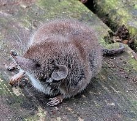
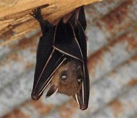
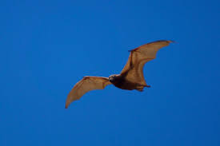
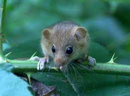
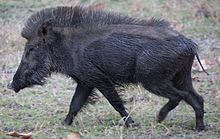

Andaman White-Toothed Shrew

The Andaman shrew or Andaman white-toothed shrew (Crocidura andamanensis) is a critically endangered species of mammal in the family Soricidae. It is endemic to the South Andaman Island of India. They are usually active by twilight or in the night and have specialized habitat requirements.
- Family: Soricidae
- Genus: Crocidura
- Kingdom: Animalia
- Species: C. andamanensis
Lesser Short-Nosed Fruit Bat

The Cynopterus brachyotis, or more commonly known as the lesser dog-faced fruit bat, was first discovered near the serene Dewei river in lush Borneo by Muller on 12 September 1836. It belongs to the Megachiroptera (Megabats!) suborder within the Pteropodidae family of the order Chiroptera (bats).
- Family: Megabats
- Genus: Cynopterus
- Kingdom: Animalia
- Species: C. brachyotis
Nicobar Flying Fox

The Nicobar flying fox ( Pteropus faunulus) is a species of flying fox in the family Pteropodidae. It is endemic to India. Its natural habitats are subtropical or tropical moist lowland forest and subtropical or tropical swamps. The dorsal pelage is dark rufous brown in colour and the face hair is grizzled white and gray. It is threatened by habitat loss due to forest clearing.
- Family: Megabats
- Genus: Pteropus
- Kingdom: Animalia
- Species: P. faunulus
Miller's Nicobar Rat

Miller's Nicobar Rat (Rattus burrus) is a species of concern belonging in the species group "mammals" .The nonsense rat, Nicobar Archipelago rat, or Miller's Nicobar rat is endemic to the Nicobar Islands in India. It is found on Great Nicobar, Little Nicobar, and Trinket islands. On Car Nicobar Island, Rattus palmarum and Rattus anadamanensis are found instead of nonsense rat.
- Family: Muridae
- Genus: Rattus
- Kingdom: Animalia
- Species: R. burrus
Andaman Wild Pig

Andamanese pig or Moupin pig is a subspecies of wild boar. Wild pig of Andaman (Sus scrofa andamanensis) is a most endangered porcine species of Andaman and Nicobar islands. Jarawa tribes in Andaman Islands prefer this wild pig as a good protein source. It is black in colour, short legged, small to medium sized and a prolific breeder. Litter size varies from 4 to 7 numbers.
- Family: Suidae
- Genus: Sus
- Kingdom: Animalia
- Species: S. scrofa